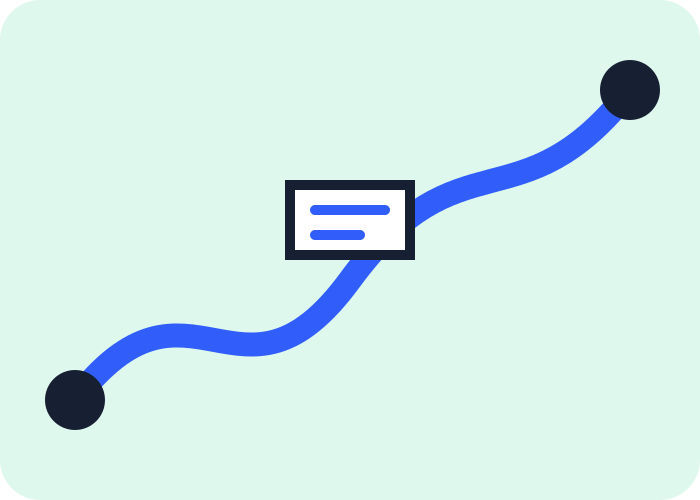
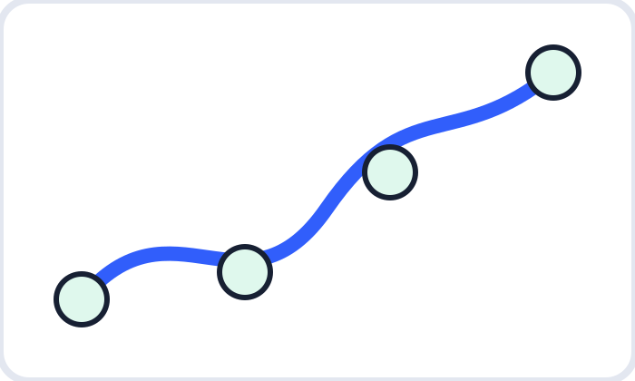

Learn the workflow
Understand forks, branches, commits, reviews, and pull requests without jargon.
START SMALL · CONTRIBUTE WITH CONFIDENCE
A free, practical guide for setting up your profile, finding welcoming projects, making your first pull request, and meeting the people behind open source.

ONE REPOSITORY · MANY FIRST WINS
Everything here is designed to make the first contribution feel clear, kind, and achievable.
Understand forks, branches, commits, reviews, and pull requests without jargon.
Choose projects with clear instructions and build relationships through useful participation.
Use the sandbox and downloadable checklists before contributing to a larger project.
YOUR ROADMAP

MAKE IT PERSONAL
Tap a route and we’ll point you to a calm, concrete next move.
YOUR NEXT MOVE
Add a clear bio, a profile README, and one small project. Make it easy for a new collaborator to understand what you are learning.
Download printable checklists, templates, a cheat sheet, and a badge tracker for your next study session.
See all downloads ↗